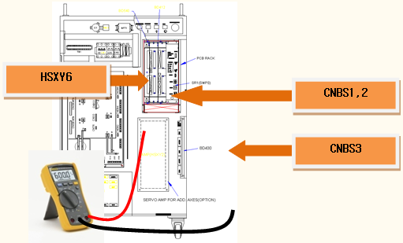
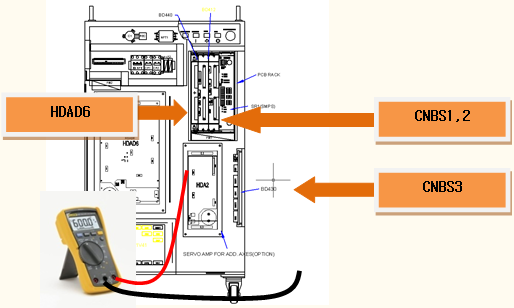
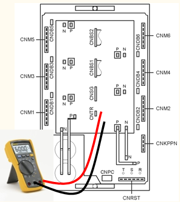
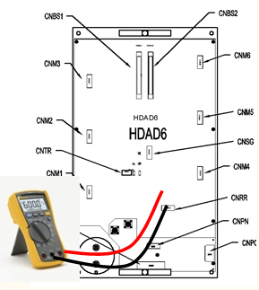

13.1. 개요
모터를 구동하는 서보 구동장치 내의 스위칭 소자인 IPM(intelligent Power Module)에서 폴트 출력이 발생하였습니다. 또는 소형 로봇용 서보 구동장치 내 퓨즈가 단선되었습니다. IPM 폴트는 방열판의 온도 상승, IPM의 제어전압 저하 및 과전류 출력에 의해 발생할 수 있습니다.
13.2. 원인 및 점검방법
|
< 모터 온 하는 순간 또는 비주기적으로 에러가 발생하는 경우> 1. 모터 구동용 부품을 점검하여 주십시오. １) 서보 구동장치에 접속하는 출력 케이블을 점검하여 주십시오. ２) 서보 구동장치 내 스위칭 소자의 단자를 점검하여 주십시오. ３) CNBS1,2,3 케이블을 교체한 후 에러를 확인하여 주십시오. ４) 서보 구동장치를 교체한 후 에러를 확인하여 주십시오. ５) 서보보드(BD540/BD541)를 교체한 후 에러를 확인하여 주십시오. ６) 서보 모터를 교체한 후 에러를 확인하여 주십시오. < 특정 스텝에서 발생하는 경우> 2. 에러가 발생하는 스텝에서 로봇을 점검하여 주십시오, １) 에러가 발생하는 위치에서 로봇의 배선을 점검하여 주십시오. ２) 로봇의 재생 속도를 낮추어 에러를 확인하여 주십시오. ３) 티칭된 스텝의 보간을 변경한 후 에러를 확인하여 주십시오. |
1. 모터 구동용 부품을 점검하여 주십시오.
모터를 구동하는 서보 구동장치는 CNBS 케이블을 통하여 서보 보드(BD540/BD541)에서 지령을 입력받고, 내부의 증폭회로 전류 출력은 각 축별 커넥터로 연결된 배선에 의해 모터에 전달됩니다.
1) 서보 구동장치에 접속하는 출력 케이블 점검
서보 구동장치에서 모터로 연결되는 배선의 상태를 점검합니다. 점검 시에는 제어기의 전원을 OFF한 상태에서 커넥터를 서보 구동장치에서 분리한 후 케이블 측의 각 상과 접지간 저항 값을 측청하여 단락여부를 확인하여 주십시오.

그림 5.48 Hi4a-0000 제어기의 서보 구동장치 출력 케이블 점검

그림 5.49 Hi4a-0010/0012 제어기의 서보 구동장치 출력 케이블 점검
2) 서보 구동장치의 스위칭 소자 점검
서보 구동장치의 스위칭 소자는 다이오드 모듈에서 공급된 직류 전압을 스위칭하여 각 상별로 교류 전류를 출력합니다. 만약 스위칭 소자의 내부 단자에서 단락이 발생하면 과전류가 흘러서 IPM 폴트 에러가 발생합니다. 커넥터를 분리한 상태에서 서보 구동장치의 스위칭 소자의 출력단자와 P 또는 N간 단락여부를 확인하여 주십시오. 만약 단락이 확인되면 서보 구동장치의 교체가 필요하고, 서보 구동장치에서 모터로 연결하는 케이블의 점검도 필요합니다.
중형 로봇용 서보 구동장치 : HSXY6
소형 로봇용 서보 구동장치 : HDAD6

그림 5.50 HSXY6의 스위칭 소자 단락 점검

그림 5.51 HDAD6의 스위칭 소자 단락 점검
3) CNBS 케이블을 교체한 후 에러를 확인
모터를 구동하는 서보 구동장치는 CNBS 케이블을 통하여 서보 보드(BD540/BD541)에서 지령을 입력받고, 내부의 증폭회로 전류 출력은 각 축별 커넥터로 연결된 배선에 의해 모터에 전달됩니다. 케이블을 교체한 후 에러가 발생하지 않으면 케이블의 불량입니다. CNBS 케이블을 정상품으로 교체하여 주십시오.
4) 서보 보드(BD540/BD541)의 교체 점검
서보 보드(BD540/BD541)를 교체한 후 에러가 발생하지 않으면 서보 보드의 불량입니다. 서보 보드를 정상품으로 교체하여 주십시오.
5) 서보 구동장치의 교체 점검
서보 구동장치를 교체한 후 에러가 발생하지 않으면 서보 구동장치의 불량입니다. 서보 구동장치를 정상품으로 교체하여 주십시오.
중형 로봇용 서보 구동장치 : HSXY6
소형 로봇용 서보 구동장치 : HDAD6
6) 서보 모터의 교체 점검
서보 모터를 교체한 후 에러가 발생하지 않으면 서보 모터의 불량입니다. 서보 모터를 정상품으로 교체하여 주십시오.
2. 에러가 발생하는 스텝에서 로봇을 점검하여 주십시오.
IPM 폴트 에러가 특정 스텝에서 발생하는 경우는 티칭된 스텝에서 기구 배선의 손상의 효과가 크게 나타나거나 티칭된 프로그램의 자세변환 시 축속도가 크게 변하는 경우에 발생할 수 있습니다.
1) 에러가 발생하는 위치에서 기내 배선을 점검
로봇 내부의 모터로 연결되는 해당 축의 배선 상태를 점검합니다. 점검 시에는 제어기의 전원을 OFF한 상태에서 출력 커넥터를 서보 구동장치에서 분리한 후 케이블 측의 각 상과 접지간 저항 값을 측청하여 단락여부를 확인하여 주십시오
2) 로봇의 재생 속도를 낮추어 애러 확인
로봇의 자세변화가 축속도의 급격한 변화를 유발하는 스텝에서 에러가 발생하는 경우에는 재생 속도를 낮추어 에러를 확인합니다. 재생 속도를 낮추어 에러가 해소되는 경우에는 해당 스텝의 티칭 속도를 변경하여 작업 프로그램을 기록 후 사용하십시오.
3) 티칭된 스텝의 보간을 변경하여 에러 확인
재생 속도를 75%이하로 낮추어도 축속도가 급격히 변화는 경우에는 티칭된 스텝의 보간을 ‘P’로 변경하여 에러를 확인하여 주십시오. 만약에 동일한 재생 속도에서 보간의 변경으로 에러가 해결되는 경우에는 티칭을 수정하여 주십시오.